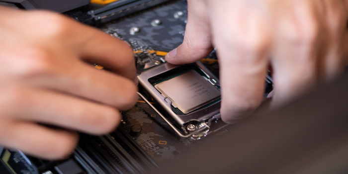
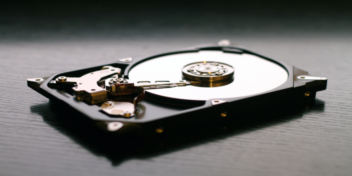
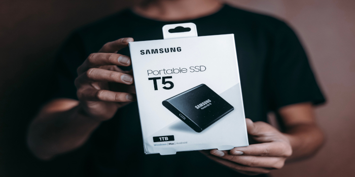
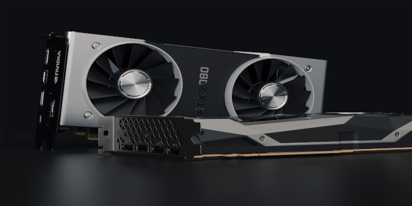

O que é Hardware?
Hardware é o conjunto de todos os componentes físicos de um computador. São todas as peças que podem ser vistas e tocadas.
Sem o hardware, o computador simplesmente não existiria fisicamente.
Principais Componentes:
Processador (CPU)

O processador, também conhecido como CPU (Central Processing Unit), é o principal componente de um computador, responsável por executar instruções e processar dados. Ele realiza cálculos, interpreta comandos dos programas e coordena o funcionamento dos demais componentes do sistema, como a memória RAM, o armazenamento e a placa de vídeo. A velocidade e a capacidade de um processador influenciam diretamente o desempenho do computador. Quanto mais moderno e eficiente ele for, maior será a rapidez para abrir programas, executar tarefas e processar informações, tornando a experiência de uso mais ágil e produtiva.
Funções:
- Executar programas
- Processar dados
- Controlar outras peças
- Memória RAM
É a memória utilizada temporariamente pelos programas enquanto estão em execução.
Características:
- Muito rápida
- Armazenamento temporário
- Perde os dados quando o computador é desligado
- HD e SSD
São dispositivos responsáveis pelo armazenamento permanente dos arquivos.
HD(Hard Disk Drive)

O HD (Hard Disk Drive) é um dispositivo de armazenamento responsável por guardar os dados de um computador de forma permanente, mesmo quando ele está desligado. Nele ficam armazenados o sistema operacional, programas, documentos, fotos, vídeos e outros arquivos importantes. O HD utiliza discos magnéticos para gravar e ler informações. Embora ofereça grande capacidade de armazenamento por um custo mais baixo, ele é mais lento que um SSD, pois possui peças mecânicas em movimento. Ainda assim, continua sendo uma opção bastante utilizada para armazenar grandes quantidades de dados.
- Mais barato
- Possui disco mecânico
- Mais lento
SSD(Solid State Drive)

O SSD (Solid State Drive) é um dispositivo de armazenamento que utiliza memória flash para gravar e acessar dados, sem possuir partes mecânicas em movimento. Ele é responsável por armazenar o sistema operacional, programas e arquivos, assim como um HD. A principal vantagem do SSD é sua alta velocidade de leitura e gravação, permitindo que o computador inicialize mais rapidamente, abra programas em menos tempo e ofereça um desempenho geral superior. Além disso, por não possuir componentes mecânicos, o SSD é mais silencioso, resistente a impactos e consome menos energia.
- Muito mais rápido
- Não possui partes móveis
- Maior desempenho
- Placa-mãe
É o componente responsável por conectar todas as peças do computador.
Ela permite a comunicação entre:
- Processador
- Memória RAM
- HD ou SSD
- Placa de vídeo
- Fonte
- Fonte de Alimentação
Transforma a energia elétrica da tomada na energia utilizada pelos componentes internos do computador.
Placa de Vídeo

A placa de vídeo, também conhecida como GPU (Graphics Processing Unit), é o componente responsável por processar e gerar as imagens exibidas na tela do computador. Ela realiza cálculos gráficos para executar jogos, editar vídeos, criar modelos em 3D e reproduzir conteúdos com alta qualidade. Existem placas de vídeo integradas ao processador e placas dedicadas, que possuem memória própria e oferecem maior desempenho. Quanto mais potente for a placa de vídeo, melhor será a capacidade do computador para executar aplicações gráficas exigentes com maior velocidade e qualidade.
Responsável pelo processamento gráfico.
É muito utilizada para:
- Jogos
- Edição de vídeos
- Modelagem 3D
- Inteligência Artificial
- Dispositivos de Entrada
São equipamentos utilizados para enviar informações ao computador.
Exemplos:
- Teclado
- Mouse
- Scanner
- Microfone
- Webcam
- Dispositivos de Saída
São equipamentos responsáveis por apresentar informações ao usuário.
Exemplos:
- Monitor
- Impressora
- Caixa de som
- Projetor
Curiosidade
O primeiro disco rígido (HD), lançado pela IBM em 1956, pesava cerca de uma tonelada e armazenava apenas aproximadamente 5 MB de dados.